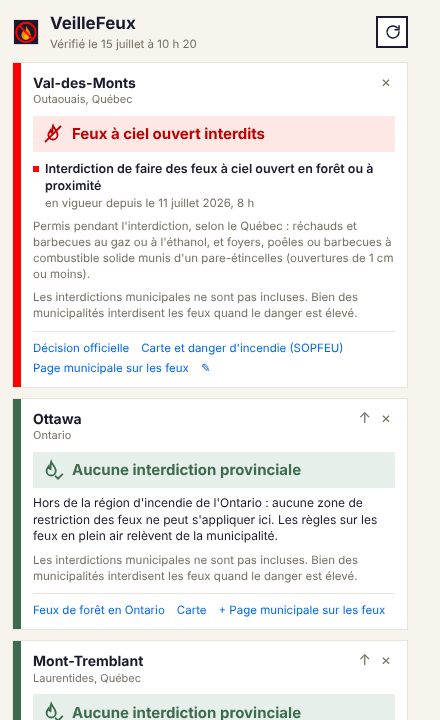
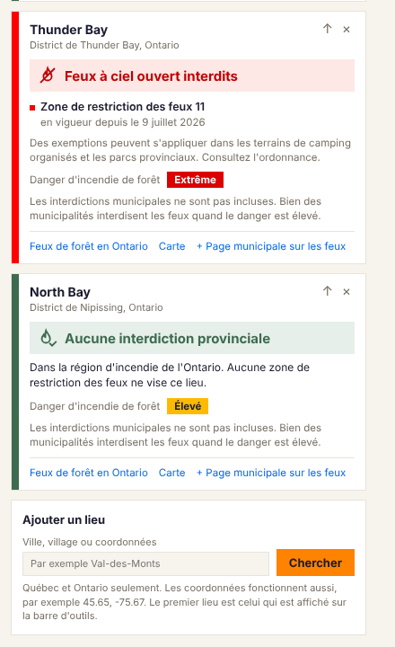

VeilleFeux
Peut-on faire un feu à ciel ouvert là-bas en ce moment? Les interdictions provinciales pour jusqu'à cinq lieux au Québec et en Ontario, vérifiées selon les données officielles des gouvernements. En anglais, l'extension s'appelle FireBanWatch.
Bientôt dans Microsoft Edge Add-ons. Chrome Web Store plus tard.

Les images montrent des interdictions fictives, pas la situation actuelle.
Ce que fait l'extension
- Donne une réponse claire pour chaque lieu : feux à ciel ouvert interdits, aucune interdiction provinciale, ou vérification impossible.
- Nomme l'interdiction et sa date d'entrée en vigueur, avec un lien vers la décision officielle.
- Québec : vérifie l'interdiction de faire des feux à ciel ouvert en forêt ou à proximité et l'interdiction de circuler et d'accéder en forêt.
- Ontario : vérifie les zones de restriction des feux et les ordonnances de zone d'urgence en vigueur, et affiche l'indice de danger d'incendie de forêt du 1er avril au 31 octobre.
- Affiche un badge rouge sur la barre d'outils quand une interdiction vise votre premier lieu.
- Envoie une notification quand une interdiction commence ou prend fin à un de vos lieux.
- Garde sur chaque fiche un lien vers la page de votre municipalité sur les feux.
- Fonctionne en français ou en anglais, en mode clair ou foncé.

Bon à savoir
- Les interdictions municipales ne sont pas incluses. Bien des municipalités, terrains de camping et parcs interdisent les feux eux-mêmes, souvent quand le danger d'incendie est élevé. Vérifiez auprès de votre municipalité avant d'allumer un feu.
- En Ontario, les zones de restriction des feux ne s'appliquent que dans la région d'incendie de la province, dans le Nord. La majeure partie du sud de l'Ontario, dont Ottawa et Toronto, en est exclue : les règles sur les feux en plein air y relèvent de la municipalité.
- La carte du Québec est une représentation visuelle de la décision du ministère. La décision publiée sur Québec.ca est le texte officiel.
- Les vérifications se font seulement quand le navigateur est ouvert, de toutes les 30 minutes à toutes les 6 heures.
- VeilleFeux n'est pas un service officiel. C'est un projet indépendant, sans lien avec le gouvernement du Québec, la SOPFEU ou le gouvernement de l'Ontario.
Respect de la vie privée
Aucun compte, aucune connexion. Vos lieux et vos réglages restent dans votre navigateur. Pour le Québec, l'extension télécharge la carte complète des interdictions et vérifie vos lieux sur place : aucune position n'est envoyée. Pour l'Ontario, les coordonnées de vos lieux ontariens sont envoyées au service de cartes des feux de la province. Lisez la politique de confidentialité.
Sources des données
Québec : Mesures préventives en cas de feux de forêt, ministère de la Sécurité publique du Québec, par Données Québec (CC BY 4.0). Ontario : carte d'information sur les feux de forêt, ministère des Richesses naturelles (Licence du gouvernement ouvert – Ontario). Recherche de lieux par Open-Meteo.com (CC BY 4.0).
Soutien
Questions ou problèmes : pavwerk@gmail.com